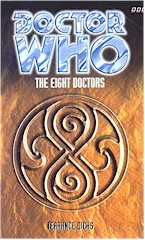

|
The Eight Doctors
|
BASIC PLOT DOCTOR COMPANIONS Ian, Susan and Barbara appear in cameo. Jamie and Zoe appear as part of The War Games (reprise) Jo Grant as part of The Sea Devils. Romana, in her second incarnation, appears immediately after State of Decay. Tegan and Turlough, and quite fun they are too. Mel, but only briefly and on the Matrix screen. MATERIALISATION CIRCUIT Pg 32 In the forest from An Unearthly Child. Pg 47 On the Planet of the War Games, in the Roman Zone Pg 93 By this point, the Doctor has materialized at one of the numerous UNIT HQs that appear to be dotted around England. Pg 132 The Doctor arrives on the planet from State of Decay. Pg 141 The Doctor dematerializes from the clearing and reappears in the rebel base, also on the State of Decay planet. Pg 162 The Fifth Doctor's TARDIS arrives on the Eye of Orion. Pg 169 The Eighth Doctor then carelessly parks his own TARDIS on top of it. Pg 191 The Eighth Doctor materializes in an alternate time-line that the Valeyard is trying to create on the space station from The Trial of a Time Lord. Pg 196 By now, the Doctors (6 and 8) have materialized on Gallifrey, although we don't see it happen. Pg 261 The Seventh Doctor has by now arrived on Metebelis III, although we miss the actual materialization. Pg 262 The Eighth Doctor arrives for his final visit to his past. Pg 269 The Tomb of Rassilon. Presumably a being of Rassilon's power can cheerily disregard the Transduction Barriers. Pg 272 Back on Earth, and back at that junkyard again. The TARDIS stays there for approximately half a page. PREPARATORY READING CONTINUITY REFERENCES "Events at the millennium celebrations in San Fransisco flashed through his mind in a jumble of outrageous images. It had been a weird, fantastic adventure, full of improbable, illogical events." And that, it would appear, is Dicks' opinion of said Telemovie. "Where had he [The Master] acquired those mysterious morphotic powers he had made use of so freely?" In the Telemovie. (Dicks does try and explain this later, although he sacrifices continuity spectacularly to do it). Pgs 1-2 "It wasn't the Eye of Harmony at all of course, not really. Just a symbolic manifestation, an aspect of the Great Eye of Harmony on Gallifrey. Created by Omega, stabilized by Rassilon, the Eye held a trapped Black Hole." We all knew it wasn't the real Eye when we watched the Telemovie. This references The Deadly Assassin, The Three Doctors and The Five Doctors. Pg 3 "This, although he didn't realize it, was the old, traditional TARDIS console room, in all its classic simplicity. A few old-fashioned chairs, a comfortable chaise-longue, an antique table, a hat-stand, a tall column with the statue of a bird on top..." Terrance clearly prefers the old console room. The decorations are mostly things we've seen in the series or previous books. (See also Continuity Cock-Ups, though, as the existence of this console room should currently be in doubt.) Pg 4 "A word formed itself in his mind: amnesia." Now there's a word the Eighth Doctor is going to get increasingly familiar with. At least this time, it only takes him a book's worth to get his memory back. (Interestingly, the Doctor's amnesia is very similar to Ace's in Timewyrm: Genesys, in that he knows practical things, but nothing about himself. This is for the same reason plotwise as well, in that it introduces the uninitiated to the world of Who. No one expected it on this scale, however.) "He felt a girl's warm lips on his own and heard a voice shout exultantly, 'I am the Doctor!' The voice was his own." The Telemovie. "It called up a shadowy picture of a great vaulted chamber in which a shaft of light picked out a massive stone bier. On the top of the bier lay a motionless form, dressed in ancient ceremonial robes. A frieze of Time Lord images ran around the sides of the bier, but the eyes in the stone faces were furiously alive." This is the tomb of Rassilon, from The Five Doctors. Pg 6 "A faded sign was propped against one wall. TOTTERS LANE YARD, I.M. FOREMAN, PROP." This is accurate to An Unearthly Child, I think. "The place had been closed for years now - a junkyard that had been junked. It had a sinister reputation that went back over thirty years. Something about a mysteriously appearing and disappearing police box. There didn't seem to be any sign of it now, but there had been tales of people just disappearing - and about strange silvery monsters." The police box itself actually only appeared and disappeared once to the best of our knowledge (it did move around in Time and Relative, but no one saw this happen). The silver monsters refers to Attack of the Cybermen (when the Chameleon Circuit was functioning, so still no Police Box, and, for that matter, Cybermen never appeared in the junkyard (to the best of our knowledge)). Strange that there is no reference to the massive Dalek incursion here in 1963, although presumably that's because of the Official Secrets Act. (Note also that the Police Box didn't land at the junkyard in that story.) People disappearing - Ian and Barbara in this case - is accurate. Also see Interference, part II for more information that you could possibly want to know about the provenance of the junkyard on Totter's Lane. Pg 7 "It was then that she heard a strange wheezing, groaning sound from somewhere behind her." Terrance Dicks is the inventor of this particular description of the TARDIS materialization sound. It appears in Target novelisations too numerously to mention. Pg 9 "We all know you're Coal Hill School's friendly neighbourhood dope dealer." Susan went to this school, where Ian and Barbara were teachers. It seems to have gone downhill since then. Sam uses the phrase "Duff me up." There is no excuse for this. Pg 10 "I don't smoke - I don't even drink Coke. I'm a vegetarian..." Sam's seeming 'perfection' later turns out to be something that has been rewritten through her DNA by Faction Paradox. See Alien Bodies and Unnatural History. Pg 11 "For a brief moment, the Doctor recalled flying through the air, picking himself up and facing a many-armed, glowing-eyed being in a huge, misty cavern." This is the Doctor remembering his training in Venusian Aikido, which is alluded to in Venusian Lullaby and mentioned in the short story Venusian Sunset from the collection, Perfect Timing. Pg 12 "In fact he had become extremely adept at Venusian Aikido. Few two-armed lifeforms could claim as much." Venusians have five legs, as we see in Venusian Lullaby. Pg 14 "Were you aware that this stuff was being peddled in your area? There was nothing like that going on in Coal Hill when I used to live here." Time and Relative and An Unearthly Child. And see Continuity Cock-Ups. Pg 15 "Another dormant memory revived. 'Smith. Doctor John Smith.'" A pseudonym used by the Doctor since The Wheel in Space. Pg 19 "'What do you claim to be qualified in?' 'Practically everything.'" A claim initially made by the Second Doctor. Can't remember when though. "'How about giving us your real name?' 'Oh no, I couldn't do that,' said the Doctor, looking shocked. 'Why not?' 'It's secret. Confidential. They used to call me Theta Sigma at the Academy, but that was more of a nickname really.'" The Armageddon Factor. Scarily, this perpetually shocked and naive characterization of the Eighth Doctor is one which would continue in other 8DAs, leading to his nickname of 'the congenital idiot' by much of fandom. Pg 23 "'You know Marilyn Simms in Year Five?' 'The one with the outstanding - personality?' said Trev." It's obvious what Trev means. I mention this briefly, because by this point in most comprehensive schools in England, Year 5 means 9-10 year olds, not 15-16, which is, by 1997, referred to as Year 11. Which, if nothing else, makes Trev's comment somewhat alarming. Presumably Coal Hill's quite outdated. Pg 26 "Now he [The Doctor] was sitting in the interview room, under the watchful eye of a constable, enjoying a nice cup of strong sweet tea and a thick bacon sandwich." Since The Two Doctors and throughout his seventh incarnation, the Doctor was a vegetarian. Currently, of course, the Doctor is amnesiac, so he wouldn't remember this, but I mention it because the Eighth Doctor is, as some of the books show, not vegetarian. Pg 30 Sam, Trev and Vicky reprise episode one of An Unearthly Child: "Sam put her hand flat against the door. 'The odd thing is, it feels - alive...'" Pg 32 "The Doctor dreamed. He was in the same place, the same control room, but everything was different. He saw a white-haired old man with a fierce beak of a nose, talking to a young man and woman and a dark-haired girl. The old man was angry... The old man was him." A flashback to An Unearthly Child, episode one. Pg 33 "Suddenly he heard a man yelling in rage and pain. The sound was followed by a woman's scream and then by the coughing roar of some enraged beast." The Doctor has arrived midway through Episode Three of An Unearthly Child. "'Sabre-toothed tiger,' he murmured. 'Very fine specimen too. Done for, poor thing, it won't survive that wound.'" That's because it took away Za's axe in its head, as we learned in An Unearthly Child. Pg 34 "He felt the impulse of murderous rage flooding through the old man's mind, saw him moving towards a jagged stone that lay on the ground nearby." This is a reprise of the closest we get to the Doctor killing someone because it's convenient to do so (in the television series at least). The 'solution' we get - the Eighth Doctor stopping him - is a bit naff actually. Pg 35 "Memories flooded into the Doctor's mind. Memories of his childhood, of his mother smiling, of his father holding him up to see the stars." We learn about the Doctor's parents in the Telemovie and possibly meet them or learn something about them in Cold Fusion, The Gallifrey Chronicles, The Room With No Doors, The Infinity Doctors and Unnatural History. "Memories of school, of the Academy, of playing truant to drink with the Shobogans, to visit an old hermit who lived high on a misty mountain." The hermit is K'Anpo Rinpoche from Planet of the Spiders. The main memories we have of the Doctor's time at the Academy come from Divided Loyalties, which is unfortunate. The Shobogans were first mentioned in The Deadly Assassin. "Memories of public life and of rising high in the ranks of the Time Lords." Possibly The Infinity Doctors, implied elsewhere. "Suddenly he was in the Council Chamber on Gallifrey, wearing the high-collared orange and scarlet robes of the Prydonian Chapter, his voice raised in anger against his fellow council members." This isn't quite how it appeared to happen in Lungbarrow, although there's nothing to suggest that dissent hadn't been brewing for some time. The murder of Quences was probably the final straw. "He was striding down the long marble corridors of the Capitol, still seething with anger. He stood in a vault, deep beneath the Capitol, opening the door of an obsolete, erratically functioning Type Forty TARDIS. He heard the voice of a young girl: 'Grandfather, wait - I'm coming with you...'" Susan and the Doctor always claimed to have left Gallifrey together. This would appear to contradict Lungbarrow, where the Doctor leaves on his own and meets Susan in Gallifrey's past. However, it's possible that he'd already been away a couple of times, met Susan and brought her into Gallifrey's future, where she lived for a while before he finally left. It's still a bit of a fudge, though. Pg 38 "Ian, the young man, leaped up and grasped the First Doctor's wrist." The scene continues as per An Unearthly Child, albeit with a couple of lines added. And that's the last we see of them. Pg 39 "This wasn't, of course, the same Flavia who had been pitched into the Presidency when Borusa vanished and the Doctor absconded - again - after the Death Zone affair." The Five Doctors. "In the whirlpool of Gallifreyan politics, she had been deposed from the Presidency and subsequently re-elected." This is supposed to cover Romana's presidency in the NAs. Of course, since Romana is also president during later EDAs, we can safely assume that it's a pretty dynamic political whirlpool out there. Pg 41 "Flavia regarded him with disfavour. 'Is this temporal gobbledegook supposed to convey something to me?'" Alarmingly, the President of Gallifrey does not appear to understand temporal mechanics, or indeed time travel in general. The Universe should shudder in fear. Pg 42 "We must remember that he has engaged in cross-temporal activity three times before. Once, at our request, to deal with the Omega crisis, again when he became involved in the Game of Rassilon, and once when his sixth self was allowed to go to the rescue of his second." The Three Doctors, The Five Doctors, The Two Doctors. See also Continuity Cock-Ups. Pg 43 "He has, on occasion, served, however briefly, as its President." The Invasion of Time. The Five Doctors until he was deposed before The Trial of a Time Lord. Pg 44 Castellan Spandrell: "He was younger-looking than when he had last met the Doctor." The Deadly Assassin, arguably Lungbarrow, although I would argue otherwise (see below). "Suspected links to Goth and Borusa in earlier regenerations. Marginally involved with the Committee of Three." The Deadly Assassin, The Five Doctors and presumably the Committee of Three is the same as the Council of Three seen in Blood Harvest. Pg 45 Mention of the Celestial Intervention Agency, possibly connected to the CIA on Earth. Check The King of Terror if you care (or dare). The sexism of Doctor Who rarely gets more outrageous than: "With all due deference to the Madam President's feminine sensibilities..." Pg 48 "What attitude had his people taken to his defection? Had they simply ignored it? Or were they angrily hunting him down? He didn't feel like a fugitive. Perhaps there had been some kind of reconciliation? A lot could happen in half a dozen lifetimes." Indeed they (eventually) do. The War Games. The Three Doctors et al. These are remarkably precognizant thoughts for the Doctor to be having as he walks into the set of The War Games. Pg 49 "'Are you a Roman citizen, Doctor?' 'Indeed I am,' the Doctor heard himself reply." Indeed he is - see The Romans. (The Doctor doesn't remember this at this point, though.) Pg 50 "It's the mist that does it." From The War Games. Pgs 51-52 "The other day, not far from here we found this great big - wagon, I suppose you'd call it, sitting on the road, with a group of weird-looking people standing round it. There was only a handful of 'em and we reckoned the wagon might be full of enemy supplies, so we attacked." A succinct summary of the end of The War Games, episode 2, from the other point of view. Pg 54 Mention of the brainwashing techniques of the War Lord's people. Pg 56 "No doubt if I were to press you for an actual name you would say "John Smith"." Lucke has recently met the Second Doctor masquerading under this name that he has used since The Wheel in Space. Pg 57 Lucke recounts his experiences with the Second Doctor. Pg 58 There's a wonderfully subtle moment on Pg 57 when Lucke, speaking of his encounter with the Second Doctor, toys with his pistol. The subtlety is then completely subverted by: "He had something he called a sonic screwdriver. Without touching it he made a screw come out of the butt and go back in again. Later, he stole my pistol and escaped." Pity. We knew that, of course. We saw him do it in The War Games. Pg 60 Mention of Captain von Weich (also known as Captain Beauregard Lee of the Confederate Army). He is dead, allowing us to fix the timescale of this part of the Doctor's journeys to towards the end of The War Games. Pg 63 "In front of him was a magnetic control board." We all knew the SIDRAT controls were magnets, but it's quite cool to have that confirmed. The rest of Pg 63 is a reprise of the final sequence before the Doctor sends his telepathic alert from Episode 9 of The War Games. Pg 65 "With the help of a traitor Time Lord, aliens brought soldiers from different wars in Earth's history, brainwashed them into thinking they were still in their own time and place, and let them go on fighting, planning to weld the survivors, the toughest, into a galaxy-conquering army." A fair summary of The War Games. Amazing that they got ten episodes out of it. As the Doctor says, "As crackbrained a scheme as I've ever encountered." Pg 66 "And since you left, you have overcome monstrous enemies. The Quarks, the Yeti, the Ice Warriors, the Daleks... Tell the Time Lords about it - they'll listen. Make them see that there are evil forces in the universe that simply must be fought. Just sitting back and observing isn't good enough. You have an excellent defence to offer." This 'presages' what the Second Doctor says in his trial in The War Games episode 10, almost being a word-for-word quote, although it also mentions the Doctor's famous lines about evil things that must be fought from The Moonbase. Not wishing to ascend to a soapbox, but there's something unfortunate about the decision to have the Eighth Doctor appear here; it spectacularly takes all the heroism out of the Second Doctor's decision to call in the Time Lords, no matter what cost to himself, as now it appears that he had to be argued into it. Like the previous visit during An Unearthly Child, the shades of grey are gone from the equation: the Doctor does not fight his own inner demons, but has someone else do it for him. Sorry, but it does seem an inexcusable shame to reinterpret in such a ham-fisted way. Pg 67 "Thanks for the memories" is a quote from Casablanca (I think). Pg 68 continues the sequence from The War Games episode 9. Pg 71 "Suddenly the Doctor became aware that the mist was spreading over the hillside." The Time Lords, godlike at this point in Who history, have arrived. Pgs 72-73 are a reprise of the conclusion of The Sea Devils episode 6. Pg 78 "No not Silurians, that was a misnomer, quite the wrong geological period... Eocenes, if you like. What? Well, as a matter of fact, I blew up their base." Eocenes, as has been commented upon on numerous occasions, is still the wrong geological period for the Silurians. Pg 83 "'The Master is a skilled hypnotist,' said the Doctor. 'Isn't that right, Jo?' Jo shuddered. 'He did it to me once.' 'And it worked?' said Captain Hart skeptically. 'I'll say. I brought a bomb into UNIT HQ and tried to blow up the Doctor.'" Terror of the Autons. Pg 84 "Great jumping Jehosophat!" It's such a great line, clearly, that Terrance uses it twice, both here and (in abbreviated form) in The Five Doctors. (Incidentally, its appearance there ('Jehosophat! It is you!') led a number of people to believe that Jehosophat was the Master's real name.) Pg 85 "The village of Devil's End had changed surprisingly little since the time when the Master had occupied the post of Vicar there." Incredibly, the Third Doctor sequence is a sequel to not one, but two adventures: The Sea Devils and The Daemons. The rest of the page continues with a brief plot summary of the latter adventure. Pg 88 "You must blame that on your friend the Doctor, Miss Hawthorne. If he hadn't interfered with my plans for Azal -" The Daemons. Not strictly a fair representation of events. The Master continues his tirade, gloriously, by referring to Miss Hawthorne as an 'interfering old besom.' You can just imagine Roger Delgado saying that. Pg 90 "Ah yes, the Time Lord sentence of exile." The War Games through to The Three Doctors. Pg 92 "Mine got stuck as a police box on a visit to London - back in 1963 I think it was." An Unearthly Child, just in case you didn't know. Pg 95 "'It's Colonel Lethbridge-Stewart, isn't it?' [...] 'I remember you did terribly well in that nasty business with the Intelligence - Yeti in the Underground and all that.'" The Web of Fear. See also Continuity Cock-Ups. Pg 97 "That thing's useless to me now! The dematerialization circuit doesn't function and the Time Lords have taken away my knowledge of Time Travel theory." Again, the exile bit from The War Games onwards. As mentioned above, it is, of course, amusing to note that Flavia herself appears to have no knowledge of Time Travel theory anyway, and she's President of Gallifrey. So the Doctor shouldn't feel too left out. "Memories flooded back. The second Doctor's trial, regeneration and exile to Earth. Autons, Eocenes, Martian astronauts... The disastrous Inferno Project - an entire world dying in flames with nothing he could do... More Autons, aided by the Master. The deadly Keller machine, the beautiful and treacherous Axons, beleaguered colonists in space, the terrifying Azal and, inevitably, his old enemies the Daleks. He saw the gloomy caverns of Peladon and heard the roar of the sacred beast. Finally, still fresh in the Third Doctor's mind, he saw the struggle with the Sea Devils, and the escape of the Master." Much of this book appears to have been written on what Dicks can remember off-hand about the series. As script editor for the Pertwee era, the Third Doctor adventures appear to spring to mind more quickly. So here we go: The War Games, Spearhead from Space, Doctor Who and the Silurians, The Ambassadors of Death, Inferno, Terror of the Autons, The Mind of Evil, The Claws of Axos, Colony in Space, The Daemons, Day of the Daleks, The Curse of Peladon, The Sea Devils. In fact, the first 12 adventures of the Third Doctor. Doesn't leave much room for, for example, The Scales of Injustice, or Dicks' own Deadly Reunion. Nor does it mention the Season 6b theory that Dicks himself confirmed in Players and goes on to write an entire book about in World Game. But, hey... "Somewhere in the depths of his mind giant spiders scuttled in darkness." Planet of the Spiders, although there actually wasn't a lot of darkness in that story for them to scuttle in (nor did they scuttle particularly convincingly). It's also interesting to note that, post Interference, Planet of the Spiders never happened, and, theoretically, the Eighth Doctor is already infected with the Faction Paradox virus. How complicated this gets. Pg 98 "You will end this regeneration by your own choice - in a noble cause." Planet of the Spiders. (Or not, given the events of Interference, Part II) Pg 101 "Attempting to murder me with the help of a Nestene-animated telephone flex. Oh yes, I remember." Terror of the Autons. Pg 103 "The Third Doctor was staring fixedly at the police box, the Master's Tissue Compression Eliminator back in his hand." As the Third Doctor threatens to kill the Eighth, you realize that Dicks has achieved the impossible - he has taken all three of the first Doctors and made them unlikable. Which is a crying shame. Pg 108 "The fourth Doctor had just survived one of the most terrifying adventures of his life - of all his lives." How very modest of Mr. Dicks to make that assertion about an adventure that he himself wrote. He goes on to summarize Full Circle and State of Decay, including references to K9 and Adric, the latter of whom spends the entire portion of this adventure asleep! "Worse still, they were servants of the Great Vampire, sole survivor of an evil race with whom the Time Lords had once fought a long and bloody war." As detailed in State of Decay, and as has relevance in Blood Harvest and Goth Opera. By this point, the plot summaries make reading The Eight Doctors a little like reading The Programme Guide. Pg 109 "K9 was also in the TARDIS, busily trying to compute a method of leaving E-Space and re-entering normal space." As he succeeds in doing by the end of Warriors' Gate, as Blood Harvest proved. Pg 110 "The Doctor had called the place it [sic] a teknacothaka" Indeed he did, in State of Decay. Of course, the misprint here is purely this book's own. Pg 111 "Vampires are notoriously hard to kill and there may still be others lurking in hiding". There are: see also Blood Harvest. Pg 115 "Romana was getting increasingly suspicious - and increasingly angry." By this point Romana has gone to heal a sick child who doesn't exist, has, for plot reasons alone, not told the Doctor where she's going, and has been followed to her current location by a number of darkly-dressed figures with sharpish teeth. And she's 'suspicious.' It's been screaming 'TRAP!' since it started! The poor girl's behaving like a clod-hopping nincompoop, and yet by now we all know that the future of the Time Lords is in her hands. Tremble in fear. No wonder we ended up with The Ancestor Cell. Pg 116 "Zargo, Camilla and Aukon hadn't been the only vampires on the planet after all..." The vampires from State of Decay. See Continuity Cock-Ups for my problem with this sentence. Pg 117 "Old Winston was quite right." Reference to the Doctor meeting Winston Churchill. He will do so later in Players, but it's unsure whether he has already met him by this point (although I think he hasn't - but then the Fourth Doctor does name-drop so). Pg 118 "He had a brief pang of nostalgia for the kind of female companion who stayed glued to his side and screamed at the first sign of danger." You get the vague feeling that Dicks has a similar feeling of nostalgia, given that he can't write Romana at all. Pg 121 Mention of garil, the garlic-style plant which we also see in Blood Harvest. Pgs 124-125 "Romana passed him the wine jug. 'Try some, Doctor. It's a naive little domestic Burgundy, but I think you'll be amused by its presumption.'" This is a vague reference to City of Death, wherein Romana and the Doctor refer to the year 1979 as a wine. Pg 131 Reference to Alzarius (Full Circle). "At this point, a sprained ankle could mean death for the Doctor." Right back to Susan, the sprained ankle was a means for the script writer to achieve incapacitation of a companion. Pg 133 "'No time,' said the Doctor decisively." This is possibly the only time (pre-amnesia) that the Eighth Doctor is described as decisive. That said, he's not behaving like the guy we see from Vampire Science onwards, so I've actually no idea who this one is. Pg 142 Mention of the Hydrax from State of Decay. Pg 143 "The fourth Doctor grinned. 'You deserve a cup of tea and a biscuit, old chap, but you'll have to settle for a goblet of the local wine.'" A cup of tea and a biscuit is standard British fare after giving blood. Interestingly, the Doctor's blood is now a paradox, being that, if he hadn't survived, he would not have been able to come back and donate blood to himself. Some of his blood, therefore, never really existed. "They watched as a sort of ghost TARDIS rose from the original and floated away." This is exactly as in The Five Doctors, as each Doctor departs. Pg 144 Not continuity, but by far the nicest piece of writing in the book: "He thought of the fierce old man in the prehistoric jungle, of the gentle little fellow who had sacrificed his own freedom so that others might be free. He saw the tall, elegant dandy struggling bitterly against the chains of his exile but unable to resist defending the planet that had become his prison. He saw the casual bohemian in the floppy hat and the ridiculously long scarf who dared to take on the evil that stalks the dark." The sort of summary that only Terrance Dicks could give. Pg 145 "Sleep, the Doctor had once observed, is for tortoises." The Talons of Weng-Chiang. Reference to E-Space - the Time Lords have just worked out what the reader knew pages ago. Pg 147 Reference to the Eye of Harmony (The Deadly Assassin). Pg 149 "A leader he had adored had been brought down by the Doctor." It's not clear who the focus of Ryoth's adoration is, but it's probably either Goth (The Deadly Assassin) or Borusa (The Five Doctors), and most likely the former. Pg 150 "The Doctor is breaking the Laws of Time in the most flagrant manner - without the aid or support of Temporal Control and without disturbing the Eye of Harmony." In the first instance, The Three Doctors; in the second, The Five Doctors. Pg 151 "Some time ago, during the Borusa interregum, the Doctor did the Agency great harm" This is part of The Trial of a Time Lord, but also aspects of this book. Also note that the spelling should read 'interregnum'. Pg 153 "The girl's dress, brightly patterned in multicoloured squares." This is Tegan's clothing from The Five Doctors. Reference to the Black Guardian and his control of Turlough from Mawdryn Undead, Terminus and Enlightenment. Pg 154 "Despite her exotic name, Tegan had been born and raised in Australia." As we discover in Divided Loyalties, Tegan's surname comes from Serbian grandparents. "According to Time Lord legend, immortality lay in the gift of Rassilon..." A quick summary of The Five Doctors follows. Pg 155 "This is the game of Rassilon - to lose is to win, and he who wins shall lose." Repeated ad infinitum in books (Blood Harvest and Goth Opera are particular culprits), this phrase is the key to understanding The Five Doctors. Pg 156 "Then they knew they were me and I was them!" This is close to a misquote of what Jo says in The Three Doctors, itself quoting the Beatles' song 'I am the Walrus.' Pg 157 "Anyway, temporal paradoxes, like meeting yourself - or selves - create the biggest disturbance of all. They can only be allowed in the direst emergencies." As he said in The Five Doctors, although this also echoes Mawdryn Undead. Pg 158 Reference to the Dark Time, as established in The Five Doctors. Pg 160 "A tracer was placed on the Doctor's TARDIS some time ago. It has now been activated." The general assumption is that the tracer was placed during Arc of Infinity. The Doctor would discover its existence in The Trial of a Time Lord. Pg 162 "It was on a hill-top - that was good. All around a peaceful pastoral landscape stretched away into the hazy distance, but that was irrelevant. It had no eye for beauty. Close by were the ruins of an ancient structure." The Eye of Orion is exactly as it was in The Five Doctors. Pg 163 "'I know,' said Tegan. 'The most tranquil place in the universe.'" She's quoting from The Five Doctors. "'Of course, we could always have a game of cricket! I'll bat, Turlough can bowl...' 'And I'll be fielding all day,' grumbled Tegan. This may qualify as one of the worst jokes in the whole of Who history. (If you don't understand why, check the name of the actress who plays Tegan.) "' - the high bombardment of positive ions in the atmosphere,' chorused Tegan and Turlough." The Doctor's companions begin to sound like Who fans who have seen The Five Doctors far too many times because they enjoy playing the drinking game. Pg 164 Mention of Trion, Turlough's home planet, as revealed in Planet of Fire. And you should now already be able to work out that you also need to check out Continuity Cock-Ups for this one. Pg 165 "The Raston Robot moves like lightning." As it did in The Five Doctors (albeit with long pauses between vanishing and re-appearing again). Pg 167 "From the Death Zone. Sarah and I encountered it on the way to the Dark Tower." The Five Doctors. There follows a full description of the occasion. Pgs 167-168 "We can't out-fight it, but perhaps we can out-think it." I'm sure this is a quote, and I'm certain it's from the Fifth Doctor, but I cannot remember from where or when. Pg 176 "The fourth had short reddish-brown cranial fur and the differently constructed thorax that according to the Sontaran Recognition Manual Know Your Alien, marked humanoid females." Not to mention that she's got tits, of course. Sontarans have often had problems differentiating between male and female humans right back to The Time Warrior. Which is interesting considering that they can recognize each other with ease despite all looking exactly the same. Pg 178 "Only one of the Sontarans' many enemies was so important that he had an Alien Recognition Manual all to himself. The Doctor!" Sontaran books must be fairly short, since this one clearly has an absolute maximum of only 13 pages. "Sontaran time-travel capability was extremely limited, based as it was on the osmic projector." As we saw in The Time Warrior. "They could go back in time and destroy the Rutan host before it was spawned." We met a Rutan in Horror of Fang Rock, and they were first mentioned in The Time Warrior. The only attempt to get the two races to stop fighting may have occurred in The Infinity Doctors. Pg 180 "Its arm swept down and a metal javelin pierced the probic vent of another trooper, killing him outright..." Probic vents are the Achilles Heel of the Sontarans, right back to The Time Warrior. The subsequent massacre of the Sontarans is almost, shot-for-shot, a direct reprise of the massacre of the Cybermen in The Five Doctors. Pg 185 On Drashigs: "They ate a space freighter once." Mentioned in Carnival of Monsters. "Ryoth screamed. The Drashig ate him. It chopped up most of the Timescoop as well." This is almost exactly the ending of Carnival of Monsters, too. The Timescoop has now been destroyed. Again. "The Fifth Doctor's TARDIS dematerialized with the usual sound effects." I'm sorry?: 'The usual sound effects'?! Even Terrance is bored with describing it! Pg 187 "Sometimes a strange thought passed across its consciousness and it wondered if its vigil would ever end, if it would ever know the peace of oblivion. But it was a Raston Warrior Robot. It only knew how to guard, to fight and to kill. It did not know how to die." Actually, you end up feeling quite sorry for the Raston Warrior Robot. Presumably, the Eye of Orion is no longer the best holiday resort, as it's now occupied by an indestructible killing machine with eternal patience. Pg 188 "The Sixth Doctor was someone to be reckoned with - a big, powerful fellow with a tendency to put on weight." It's a description, but not a particularly fair one: the Sixth Doctor was that size from the moment he stopped being the Fifth Doctor. He never appeared to 'put on' weight. Pg 189 A long review of the trial, ending at the point it has thus far reached: the end of Episode 12. Pg 191 "The Doctor was shoved against a metal wall and the guards lined up in front of him, blasters drawn." Hang on, this is new. Apparently, this is the Valeyard trying to force an alternative time-line in which he kills the Doctor. Wait a minute, isn't he trying to kill the Doctor anyway? Why is he doing this? The whole thing screams plot-contrivance as it only occurs because Dicks needs to have the Sixth Doctor in two places at once. (One can only marvel at what must now be going on by now on Volnar's screen: "The blue line showing the Sixth Doctor had now diverged into two, and the red line of the Eighth Doctor had passed between the gap, thus creating an elegant example of temporal cross-stitching...") Pg 192 "That's absolute rubbish. The Vervoids were a dangerous experiment, not a genuine species. It's all a farrago of preposterous nonsense." Fair and true, but you get the feeling that this is Dicks' opinion of the entire Trial serial, given the lengths to which he is about to go in order to, in essence, reverse what happened and pretend it never did. Pg 194 Reference to the Valeyard's true identity, as would soon be revealed. Pg 195 "'Who do we know with the motivation, the resources, and the sheer low-down, deceitful sneakiness to set up a massive well-protected covert base?' Put like that it was obvious. 'The Agency.'" The CIA again, as Dicks begins to change the entire meaning of The Trial of a Time Lord. Pg 196 Mention of the Transduction Barriers (The Invasion of Time) and Rassilon (The Five Doctors). Pg 198 Mention of the Doctor's deposition from the position of Time Lord President, as established in Episode 1 of The Trial of a Time Lord. Pg 200 "There is a crisis. The Ravolox arrangements are in jeopardy." The Trial of a Time Lord, episodes 1-4 (The Mysterious Planet). Pg 204 "Something is rotten in the state of Gallifrey" is a misquote from Hamlet. "Begin at the beginning and go on till you come to the end, then stop" is an accurate quote from Alice in Wonderland. The first part was also a common saying of Malcolm Hulke's, which Terrance Dicks has often mentioned as being an inspiration to him. "As you know, Doctor, I was rather pitchforked into the Presidency when President Borusa's mysterious disappearance was followed by your own precipitate departure from Gallifrey." The end of The Five Doctors. Pg 206 "There were rumours - nothing more than rumours - that the secrets of the Matrix were no longer safe." The Trial of a Time Lord episodes 1-4 and 13. Pg 207 "They were both holding silver goblets filled with Rassilon's Red, Gallifrey's finest vintage." Well, it would be Rassilon's wouldn't it? The Red of Rassilon indeed. Pg 210 Reference to Borusa (The Deadly Assassin et al), Outsiders (The Invasion of Time) and Shobogans (The Deadly Assassin). Pg 214 "We'll hide out in Low Town." Low Town reappeared in The Infinity Doctors. Pg 217 "The reports of our death were greatly exaggerated." This is a misquote of Mark Twain which Dicks has used in other books. No one ever seems to get it right although this is closer than most. (The original is 'The report of my death was an exaggeration.') Pgs 217-218 "The Sixth Doctor rapped sharply on the polished machonite surface of the table." Much of the courtroom furniture was made of machonite as well, which is worth a few grotzits according to Glitz. Birthright also points out that humans invent duranite in the twenth-fourth century, an alloy of machonite and duralinium. Not a lot of people know that. Pg 218 "Not Co-ordinator any more. They said I was past it when Lady Flavia here was still President, put in some new young whipper-snapper. Even changed the job title - Co-ordinator not good enough any more - it's Keeper now!" The only time that Dicks appears to have helped continuity mend itself, this explains discrepancies between The Deadly Assassin and later Gallifrey stories. Pg 219 "Was it the Celestial Intervention Agency's idea to put me on trial?" This is that point at which Dicks completely rewrites The Trial of a Time Lord retrospectively. Pgs 219-220 "I submitted to a sentence of exile and was freed in recognition of services to Gallifrey. I have done other services since then - I might mention the Vardan/Sontaran invasion, the return of Omega, the Borusa affair... On occasion I have even held, however briefly, the supreme office of President of the High Council." The War Games, The Three Doctors, The Invasion of Time, Arc of Infinity, The Five Doctors. (He held the Presidency during The Invasion of Time and from The Five Doctors onwards for a while.) The only Gallifreyan story the Doctor fails to mention here is The Deadly Assassin, but that's because... Pg 220 "And you saved us all when Goth and the Master murdered the President and tried to take over Gallifrey" ... Engin's about to do it. Pg 221 "I was kidnapped - taken out of time - and put on trial." Incredibly, The Trial of a Time Lord is summarized again. Pg 222 "The space station that was the venue for the Doctor's trial appeared on the screen in all its unlikely Baroque glory." Another slightly snide comment from Dicks, possibly in this case because the special effects used to render the space station in The Trial of a Time Lord were actually rather good. Pg 223 "I stopped a black light explosion that would have caused a chain reaction that might have ended the universe and helped to free an underground tribe being oppressed by an extremely unfriendly robot." A summary of the first four episodes of The Trial of a Time Lord. There follows a brief description of the events on Ravolox and at the Trial itself, including reference to Sabalom Glitz, the Valeyard stopping playback and the whole Earth is Ravolox thing. Pgs 223-224 "For example, I was accused of betraying my companion Peri on Thoros-Beta and abandoning her to an alien mind-transplant. When I myself tried to introduce an adventure on the space ship Hyperion III in my own defence, I was falsely shown smashing up the ship's communication equipment - something I had no reason to do, and would never have done! For destroying the Vervoids, an artificially created race of vegetable parasites that could have wiped out all animal life on Earth, I was actually accused of genocide." The Trial of a Time Lord, episodes 5-8 (Mindwarp) and 9-12 (Terror of the Vervoids). Pg 225 "The Sixth Doctor's voice rose to a bellow that shook the conference room. He jumped up, waving an angry fist - then froze and faded away into nothingness." And, as the Sixth Doctor's usefulness comes to an end, Terrance just removes him from the plot. Interestingly, of course, this means that the real Sixth Doctor is the only one who didn't meet the Eighth. Pg 226 "'Sit down, little man,' said the Doctor in an icy voice." Strangely, the Eighth Doctor would never be this authoritative again, in any subsequent adventure right up to The Ancestor Cell. Here, uniquely, he is in complete control. Pgs 228-229 "'But why would they deliberately draw attention to Ravolox by choosing to use the events of your visit there in the trial?' The Doctor shrugged. 'A typical piece of Agency arrogance. They were attempting the classic double bluff. If they brought up Ravolox first, it looked as though they had nothing to hide.'" To be fair, we'd all been wondering this. It's not really an answer though, is it? If they hadn't brought it up at all, no one could possibly have thought that this was the reason behind the Doctor's trial. Pg 229 "The Master was smiling down at them from the Matrix screen." Given his appearance on-screen in courtroom as well, the Master's TARDIS is clearly well-stocked with video cameras. "Helpless, they looked on in horror as the bubbling wet sand closed over the Sixth Doctor's curly head..." Wondrously, the climactic chapter ending is a direct reprise of the end of The Trial of a Time Lord episode 13. Pgs 231-232 "On it crouched a stocky, villainous-looking man clutching a pair of muddy spats. Despairingly he tossed them into the quicksand. Seconds later he recoiled in horror as the Sixth Doctor rose vertically from the bubbling sand, the spats once more on his feet!" And this is the reprise of the opening of Episode 14 of Trial. Pg 232 "The Doctor had a brief vision of a sword-wielding Samurai warrior, a fast-approaching express train - his foot was trapped in the railway tracks, he couldn't move - and an attacking plane. He saw a remorseless hunter, always on his trail, felt a high-powered bullet smash into his arm." The Doctor is having a bad case of the flashbacks, on this occasion to The Deadly Assassin. Pgs 232-233 "The Valeyard is an amalgam of the Doctor's darker side, somewhere between his twelfth and thirteenth regenerations. The High Council brought him into being, offering him the Doctor's remaining regenerations, in return for his help in ensuring a satisfactory ending to the Doctor's trial." Much as we found out in The Trial of a Time Lord, although we didn't know the High Council did it. The idea's still quite naff, but at least there's a bit more of a justification for it now. Furthermore, Dicks retcons the onscreen statement about where the Valeyard comes from, which was altered from "between your twelfth and thirteenth incarnation" to "between your twelfth and final incarnation", implying that the Valyard might be a full incarnation and also that the Doctor would have more than twelve regenerations. Oh, and see Continuity Cock-Ups. Pg 234 "My agents have seized control of Public Access Television. Relevant extracts from the trial have been transmitting for some time now on every screen in Gallifrey." So it turns out, amazingly, to be the Master who engineered the collapse of the Gallifreyan government. They didn't tell us that during Trial. Pg 237 "'Typical,' said the Doctor despairingly. 'Doesn't anyone remember the French Revolution?'" Possibly a reference to The Reign of Terror, or even the book that Susan borrowed in the very first episode of An Unearthly Child. Or possibly just a reference to the French Revolution. Pg 238 "Occasionally, adventurous young Time Lords will venture into the crowded alleyways, markets and taverns of Low Town. Such expeditions are particularly popular with students at the Academy, and the Doctor had made his fair share of such trips - his instructors would have said rather more than his fair share - in his younger days. Sometimes he'd been accompanied by the Master, at the time when they were still good friends." Many references have been made to the Doctor and the Master's friendship, but few have created such a lasting impression of their Academy days together as (I fear I mention again) Divided Loyalties. And again, not really something I wanted to be reminded of. Pg 239 "It's a bad day for Timeys." The use of the word 'Timeys' is possibly the nadir of the book. Which is quite a feat, considering the competition. Pg 240 "'Oh, well,' muttered the Doctor. 'Down these mean streets a Time Lord must go.'" It's a Raymond Chandler quote that Dicks has already quoted in Blood Harvest and would go on to do again in a couple of months in, um, Mean Streets. Pg 245 "Different colours indicate the Chapters, the traditional college-style associations to which all senior Time Lords belong. The orange and scarlet of the Prydonians contrasts with the green of the Arcadians and the heliotrope of the Patrexes." Any sequence set on Gallifrey written ever, from the NAs to the PDAs, feels the need to remind us of these three colours and never any others. For the record, it's almost a verbatim quote from Runcible in The Deadly Assassin. Pg 249 A(nother) summary of The Five Doctors, ending "Having played and lost the game of Rassilon, Borusa now lived, if he could be said to live at all, as one of the stone figures set into Rassilon's bier." Pg 251 "This, the Doctor realized, was not Borusa's most recent regeneration, the one whose fierce pride had tipped over the edge of ambition into madness. This was an ealier Borusa who had helped him fight off the Sontaran/Vardan invasion." The Invasion of Time. Dicks' resurrection of Borusa (which he also does in Blood Harvest) was possibly triggered because, in the original draft of The Five Doctors, Borusa was not the villain - the Master was. Eric Saward (in my opinion, wisely) changed it to make it more dramatically satisfying and exciting, but Dicks was, reportedly, unimpressed. Inevitably, you will also want to consult Continuity Cock-Ups. Pg 252 "Seven out of ten." A reference to The Deadly Assassin, and the marks that Borusa occasionally gives the Doctor. Pg 254 "She showed him a video transcript of the end of the Sixth Doctor's trial. They watched a now obsequious Inquisitor telling the Sixth Doctor, who seemed to have survived the hazards of the Matrix and be in excellent form, that all charges were dismissed and that they owed him an immense debt of gratitude. His freedom restored, the Sixth Doctor went cheerfully on his way. The Doctor sensed that his other self was happy to know that Peri was alive and well, and looking forward to traveling with new companion Mel - if she'd only stop feeding him carrot juice." The end of The Trial of a Time Lord episode 14. If only they'd bothered to watch right to the end of the clip, though, then both Flavia and the Doctor would be aware that the Valeyard had survived and was now masquerading as the Keeper of the Matrix. Ah, well. Other people who have a collection of Doctor Who videos include the church of Zeta Major (Zeta Major) and The Meddling Monk (No Future). Pg 256 The Seventh Doctor: "His clothes were as undistinguished as his appearance: shabby check trousers, brown sports jacket, garish Fair Isle pullover. A battered straw hat and a red-handled umbrella hung from the nearby hatstand." This is the Doctor almost immediately before the Telemovie. However, from Christmas on a Rational Planet onwards, the seventh Doctor had started to wean himself off the umbrella. We can be charitable and assume that he wasn't wholly successful. Pg 257 "The Doctor could remember mornings of Gallifrey when a daisy on a snowy mountainside or a drop of dew gleaming on a blade of grass was a sufficient reason for living." This refers, probably, to the daisiest daisy mentioned in The Time Monster. "Fed up with being wise and kindly and patient and patronizingly paternal, his persona had darkened, he had become detached. He could barely believe some of the things he had done these last few years. And now, no one was here, and he realized with a cold bitterness just how much he hated being alone." Dicks' contempt for the direction taken by the New Adventures, and indeed for the Seventh Doctor in general is made devastatingly clear here. The fact that Doc 7 gets a single chapter (and that shared with the Master) demonstrates clearly that Dicks had little or no interest in the character at all, and little time for everything that much of fandom felt that the NAs had achieved. Certainly to write 60 books off in a single paragraph like that (particularly given that Dicks wrote three of them) is unforgivable. Pg 258 "'Been overdoing it, Doctor,' the Brigadier would say. 'Get away somewhere for a rest. Try Cromer...'" A reference to the Brigadier's worst moment in Who history: The Three Doctors. "I've been there twice and both times it nearly killed me." He's off to Metebelis III, where he went in The Green Death and Planet of the Spiders. (Strictly speaking, of course, the second time it actually did kill him.) "Metebelis III, famous blue planet of the Acteon Galaxy." It was originally of "the Acteon Group" in episode 1 of Carnival of Monsters, but everybody forgets this (including Jon Pertwee in episode 3 of that story, so they're in good company). We got its full postal address in The Green Death. Pgs 258-259 "While the Doctor was battling with depression, his greatest enemy, the Master, was teetering on the verge of madness. His descent into savagery on the Cheetah planet after his last encounter with the Doctor had tipped the balance of a mind always prone to paranoia over into uncontrollable obsession." Survival. And see Continuity Cock-Ups for another of the all-time greats that this book just keeps throwing out. Pg 259 "The Master threw open the treasure chest he had brought from his TARDIS [...] It meant nothing to him - he had even offered it to Sabolom Glitz once as a bribe." The Trial of a Time Lord Episode 13 (The Ultimate Foe). Pg 261 On the Deathworm: "It lives on in your remains - in the ashes even." How convenient, given what is going to happen. All of this sequence is a direct prelude to the Telemovie. The term "deathworm" is introduced here and the Master's search for it is also referred to in The Quantum Archangel. Pg 263 "Their eyes met, time froze and their minds touched. The Eighth Doctor was whole again at last." Enjoy it while you can, Doctor. Next time you're struck with sudden amnesia, you ain't gonna be so lucky. Pg 264 Reference to Jelly Babies. "He knew the Seventh Doctor's fate. He knew of the trap in the TARDIS and the hail of bullets in San Fransisco." The Telemovie. Pg 265 "'Look, you'll be getting a telepathic message soon, from an old enemy...' 'And?' 'You'd do well to ignore it. It's a trap. A - deadly trap.'" The Telemovie (but see Continuity Cock-Ups.) Pg 266 "Time will tell - it always does." A quote from Remembrance of the Daleks. "He'd reconfigure the TARDIS, the way he'd always planned. Something Gothic-looking with redwood panels. New control switches and a new scanner... He would re-read 'The Time Machine' in that signed first edition H.G. had presented him with then they had said goodbye last. And when the mysterious message came from an 'old enemy', he'd answer it." All of which leads neatly into the Telemovie. The Doctor has met H.G. Wells in Timelash, but that's not when he got the book, so he must have visited him again more recently. (And after Timelash, I'd be wanting to make amends as well.) And see, inevitably, Continuity Cock-Ups. Pg 267 "Despite the young fellow's warning, he found it hard to feel too worried." This is presumably because he has accepted his fate as detailed in The Room With No Doors and Lungbarrow. Pg 268 "Yes, it's me - your old ally, the Master! What have you got to say for yourselves, you stupid tin boxes!" Disregarding the fact that this should clearly have a question mark on the end, this clearly leads into the Telemovie. 'Your old ally' refers to Frontier in Space (possibly not coincidentally the last time the Master was played by Roger Delgado). Pg 269 "He looked first at the frieze, and was pleased to see Borusa's space still blank. Perhaps he had at least earned the peace he had scorned in the days of his madness." Yes, he has, but, as I suggest below, only after the events of Blood Harvest (which pre-date this section, but post-date the Sixth Doctor section). Pg 270 "As you once said yourself, Doctor, a man is the sum of his memories, and a Time Lord even more so. You needed your other selves, just as they needed you. For a time I needed you - to make one or two small improvements in the patterns of history." The first bit quotes The Five Doctors. The second bit makes this story sound suspiciously like an episode of Quantum Leap. (It's also slightly annoying as these 'improvements' include saving the life of Doctors four, five, six and seven - without the Eighth Doctor there, they'd've died, and he wouldn't have been there to save them, if you see what I mean. So perhaps this is a clever hint that the eighth Doctor has been infected with the Faction Paradox virus. Or perhaps not.) Pgs 273-274 "The TARDIS - the initial letters of Time and Relative Dimension in Space. The name was coined by my granddaughter, Susan." The singular of 'Dimension' as in The Unearthly Child and The Telemovie/Rose, although not most points in between. Susan, of course, claims to have made up the phrase in An Unearthly Child and it is proven how she could have done so in Lungbarrow. Pg 274 "It's in the constellation of Kasterborous, 29,000 light years from Earth." As we discovered in Pyramids of Mars. "I lived on Earth for a while." During his exile: Spearhead from Space to The Three Doctors. Pg 275 "For all I know this is all done with mirrors and we're still sitting in the junkyard." This is a reprise of something Ian says in An Unearthly Child (and he elaborates upon it in the novelisation Doctor Who in an exciting Adventure with the Daleks). Pg 276 Doctor John Smith. The Wheel in Space. Smith and Jones is unfortunate, to say the least. But not as bad as Sam doing a Bogart impression. "'It's a sign.' 'A sign of what?' 'That we were just made for each other.' 'I very much doubt it.'" Given the events of Alien Bodies and Unnatural History, it turns out that the Doctor is, in fact, utterly wrong when he says this. Sam was made for him after all. Pg 279 "Once more the Magnetron was used." As it was previously, before The Trial of a Time Lord. "By the skill of Borusa and his Temporal Engineers, time itself was folded back, so it was as though this great crime had never occurred. For this reason, the memories of those who took part in the strange events were blurred. All that happened seemed to fade from their minds." This is Dicks burying The Trial of a Time Lord completely, and covering his own interference in the rewrite. It's a rotten excuse. "When all was done, Lord Borusa left us again, saying only that he had purged his crime and was going to share Rassilon's long repose." He returns to the tomb (although this is not made clear - see below) until Blood Harvest. "Lady Flavia began her long and successful reign as President of Gallifrey." This is from the Sixth Doctor time-period, so the length is feasible. Romana would eventually take over permanently. OLD FRIENDS AND OLD ENEMIES On Gallifrey: President Flavia and Castellan Spandrell, once more out of retirement. Za, Hur and the Sabre-Toothed Tiger from An Unearthly Child. Pertinax Maximus, Centurion of the Ninth, from The War Games (we didn't know his name, but he attacked the Doctor and party at the end of Episode 2, and then, in a startlingly similar fashion, later in the story). Lt Lucke, also erstwhile of The War Games. He gets to experience an amazing episode of deja vu. Arturo Villar, Lietenant Carstairs, various other resistance members (although all, including these two, are unnamed), as well as the War Chief (Magnus, as we are informed in Divided Loyalties) reappear in The War Games (reprise). Captain Hart and Jane Blythe from The Sea Devils. And The Master (in no less than three different periods of his existence - The Sea Devils, The Trial of a Time Lord and immediately pre-the Telemovie (and see Continuity Cock-Ups on that one)). The Brigadier and Sergeant Benton (both in the Third Doctor section). Miss Olive Hawthorne, Devil's End's own White Witch. Kalmar, Ivo and a bunch of others from State of Decay and Blood Harvest. The Valeyard, The Inquisitor and the bunch of extras who sat playing the jury for what must have been days of interminable filming for The Trial of a Time Lord. On Gallifrey back in the Sixth Doctor's timeline we also meet Flavia again, but younger, as well as Co-ordinator Engin. Sabolom Glitz also appears on the Matrix screen. And Borusa returns (again, or is it for the first time?) NEW FRIENDS AND NEW ENEMIES Baz and his gang (Little Mikey, Pete and Mo), the world's most unlikely '90s drug dealers. Constables Bates and Sanders, Detective Inspector Foster and Detective-Constable Ballard, Coal Hill's finest. Trev Selby and Vicky Latimer, latterday Ian and Barbara's, teaching at Coal Hill School, but not so interesting or interested (and alarmingly unclued up on drugs for '90s Inner London school-teachers). On Gallifrey in the Eighth Doctor's time period: Tarin, Flavia's secretary. Chief Temporal Technician Volnar. Councillor Ortan. A man dressed in grey from the CIA. On the State of Decay planet: Hurda, a lady with a child and a conscience. On Gallifrey during the Sixth Doctor's time: President Niroc. Plinoc. Captain Vared. The Shobogans Kagar and Marek,
CONTINUITY COCK-UPS PLUGGING THE HOLES [Fan-wank theorizing of how to fix continuity cock-ups] FEATURED ALIEN RACES Vampires various. The Raston Warrior Robot. Sontarans. They don't last long against the mighty Raston Warrior Robot. Ryoth summons a Drashig. Which turns out not to have been his best idea. Some leftover Giant Spiders from Metebelis III. FEATURED LOCATIONS Pg 15 Coal Hill School, near Totters Lane, London, same time frame. Pg 18 Coal Hill Police Station, same time frame. Pg 24 One of Baz's flats, in the same area. Pg 32 The Forest from An Unearthly Child, roughly 100,000 BC. Pg 39 Gallifrey, contemporary with the 8th Doctor's timeline. Pg 47 The Planet of the War Games, Roman Zone. Pg 54 The Mist, the planet of the War Games. Pg 54 The Planet of the War Games, World War I Zone (France, The Western Front). Pg 63 The War Games Central Control. Pg 72 The environs around HMS Seaspite, from The Sea Devils. Also a fair amount of the south coast of England as the Master goes for a drive. Pg 85 The charming English village of Devil's End. Pg 107 The planet upon which State of Decay (and bits of Blood Harvest) was set, including the rebel base and the house of Zarn. Pg 153 The Eye of Orion. Pg 188 The Courtroom of the Doctor's trial on a Space Station (which turns out to be called Zenobia) in, quite literally, the middle of nowhere. Pg 196 Gallifrey, at the point of the Doctor's second Trial. Pg 238 The aptly, yet unimaginatively named Low Town on Gallifrey Pg 243 The Golden Grockle, a Shobogan drinking haunt, in Low Town. Pg 245 The Panopticon, on Gallifrey. Pg 248 The Tomb of Rassilon, in the Death Zone on Gallifrey (cue atonal horns). Pg 258 The Planet of the Morgs, on the fringes of Mutters Spiral. Pg 261 Metebelis III. Pg 267 The Master's TARDIS arrives on Skaro. Pg 269 Rassilon's Tomb again. Pg 272 The junkyard in Totter's Lane again. IN SUMMARY - Anthony Wilson Addendum: And who thought that letting Terrance create the new companion was a clever idea? Did no one realize that he'd just create Jo again, only with his own startlingly outdated ideas of 1990s youth culture? No wonder we ended up with Sam! |
|
 |